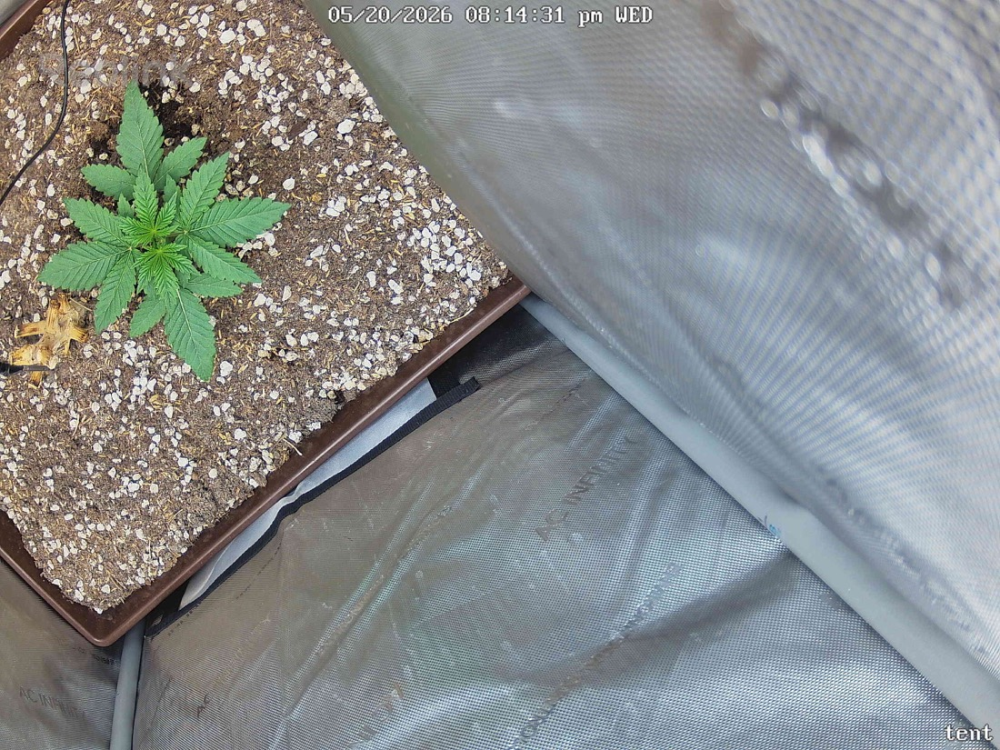

← All reports
May 20, 2026
Wed May 20, 2026 — 8:14 PM

Prognosis
Snapshot analysis — 2026-05-20, day ~22 from germ / ~15 in tent
- Structure: Compact rosette with 4–5 node pairs visible, short internodes, sturdy stem — no stretch, which is what you want at this PPFD/age.
- Color & posture: Uniform medium-deep green across the canopy, leaves flat and horizontal (no praying/tacoing, no cupping or clawing). Healthy turgor.
- Leaf detail: Serrations crisp, no burnt tips, no interveinal yellowing, no edge necrosis, no spotting or webbing. Tips look clean at 400 PPFD.
- Lower yellow leaf (left edge of pot): That's an old fallen leaf sitting on the soil surface, not attached. Per your no-till rule, leave it — it'll break down. Just confirm it isn't blocking airflow on a live fan leaf underneath.
- Soil surface: Heavy perlite cap, surface looks dry-to-touch but not bone dry — consistent with a healthy wet/dry cycle. No mold, no fungus gnats visible, no salt crust.
- Phase check: Day ~22 from germination on a photoperiod, you'd expect 4–6 true node pairs and the first signs of lateral branching — that matches what's in frame. Growth rate looks on track; not stalled, not leggy.
- Light: No bleaching or photo-stress at 400 PPFD. She's handling it. Next bump (toward ~500–600) is reasonable in the next few days if she keeps looking this happy, but no rush.
- Tent housekeeping: The mylar/poly slack in the back-right corner is bunched up against the pot — worth smoothing so it doesn't trap stagnant air or shade lower growth, but not urgent.
Suggested next actions: No action needed. Keep current light/water cadence; consider a small PPFD bump (~450) in 2–3 days if posture stays flat and dark green.
Overall: Textbook early veg — healthy, on schedule, zero stress signals.